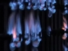

|
|
Navig.
page/section


_____
|
|
Pages soeurs
I, A propos des liants
II, Bulles, siccativ., struct. élec.
III, Caséine, phosphore, dissociation
IV, Les orbitales
V, L'aérogel
VI, Polarisation de la lumière
VII, Sfumato et diffusion Rayleigh
VIII, Les interférentielles
IX, Dextrine, farine et chiralité
X, L'ocre bleue
XI, Les métamatériaux
XII, Le jaunissement
XIII, Laser etc.
XIV, L'holographie
XV, L'holographie numérique
XVI, Extérieur, intérieur, chaux
XVII, L'électrolyse et les ions
XVIII, L'électricité, un peu plus loin
XIX, Oxydation, métaux
XX, Les échelles
XXI, Nature et évolution des résines
XXII, Le mouillage pigmentaire
XXIII, La molette
XXIV, Blanche neige
XXV, Lumière et matière
XXVI, Magnétisme
XXVII, Ambre et vieilles branches
XXVIII, L'origami miroir
XXIX, Le feu
XXX, Peau du métal
XXXI, La ville en un souffle
XXXII, Oxyder des matériaux
XXXIII, Ocre bleue, une solution
_____
|
Copyright © www.dotapea.com
Tous droits réservés.
Précisions cliquer ici
|
|
| |
|
|
Les dialogues sur la physique-chimie
appliquée aux arts
Chapitre
XXIX
Le feu |
 |
dial dial
dial
|
Emmanuel : Le
dictionnaire de l'Académie donne du feu la définition suivante :
"Combustion d'une matière inflammable."
et de la flamme, celle-ci :
"Lumière produite par les gaz
incandescents qui se dégagent d'une substance, d'un mélange en
combustion."
Qui l'eut cru, la flamme est donc
uniquement la lumière émise par l'incandescence d'un gaz. N'est-ce
vraiment que la lumière ? J'aurais dit que c'est le gaz lui-même.
Deux autres définitions :
Incandescence. "État d'un corps qui, porté à très haute température,
devient lumineux."
Un peu plus loin, l'Académie évoque quand même le courant électrique
dans le cas d'une lampe à incandescence.
Combustion. "Ensemble des phénomènes qui se produisent lorsque
l'oxygène ou un autre comburant entre en combinaison avec un ou
plusieurs corps en dégageant de la chaleur."
Ce qui m'amène à deux ou trois questions :
Energie électrique ou thermique... cela est-il important ? Quelles
autres formes de l'énergie peuvent-elles "bouter le feu" ?
Chaleur, lumière... existe-t-il des feux froids, ou des feux
invisibles ?
Jean-Louis :
Oui, bon, c'est un peu une question de définition.
|
|
|


Travaux sur le projet
Tristan et
Isolde,
Peter Sellars/Bill Viola
2005-2008 |
1) Flamme :
ce sont effectivement des gaz chauds, donc les atomes sont excités et
émettent de la lumière. Les couleurs de la flamme viennent de la
spécificité des éléments excités qu'elle contient : jaune=sodium, rose=
azote, rouge=hydrogène, etc... (comme les
aurores boréales, en fait).
C'est comme ça qu'on colore les flammes des feux d'artifice.
|
|
|
Deux phénomènes
déterminent la couleur d'une flamme
|
Il y a aussi éventuellement des particules
solides (carbone, ...) incandescentes, qui elles apportent "le
rayonnement du corps noir", c'est-à-dire un rayonnement continu qui va
du rouge au blanc quand la température s'élève (lien).
2) Ce qui produit la flamme, c'est une
réaction énergétique. L'énergie peut avoir plusieurs origines :
mécanique, électrique, chimique. Si tu frottes deux morceaux de silice
tu produits des éclairs qui sont de la
triboluminescence, si tu
fais un arc électrique tu chauffes le gaz entre les électrodes et tu
l'ionises, si tu fais brûler de l'essence, tu as une réaction
d'oxydo-réduction qui libère de la
chaleur. En exagérant un peu, un morceau de fer qui rouille lentement et
se transforme en oxyde, c'est un feu sans flamme.
Le même morceau de fer peut aussi s'oxyder plus rapidement à haute
température si tu le fais brûler dans l'oxygène.
Emmanuel : Si
je suis bien le processus que tu indiques, l'action mécanique déclenche
un échange d'électrons. Un atome (par exemple le fer que tu cites) donne
des électrons à de l'oxygène qui est un grand accueilleur d'électrons.
Cet échange produit de l'énergie thermique. Cela chauffe l'air et si je
vaporise de l'essence à proximité (ou si j'approche de la paille très
sèche), elle prend feu.
Est-ce que c'est ça ?
Jean-Louis :
Ben dans le cas des silex, pas du tout !
Le cas des deux silex frottés ou frappés : c'est de la
triboluminescence. L'énergie du choc excite les électrons des molécules
sur des niveaux supérieurs, quand ils reviennent à leur état "normal"
ils émettent de la lumière.
Si par contre on frappe de l'acier avec un silex, l'énergie du choc
porte l'acier à une température suffisante pour qu'il puisse commencer à
brûler dans l'air, et donc dégager encore plus de chaleur, ce qui permet
de propager la réaction.
|
|
|


Mur de feu, Yves
Klein
recréé en mai 2007 à Nice
Voir vidéo |
|
Le fer brûle
(parenthèse) |
Emmanuel :
Pas mal, voilà une chose que je n'ai jamais essayée.
Est-ce que l'acier brûle parce qu'il contient du carbone ou cela
fonctionnerait-il aussi avec du fer ordinaire ?
Jean-Louis :
Non, le fer brûle dans l'air si il est suffisamment chaud ou si la
surface de combustion est grande (poudres fines). Dans l'oxygène ça
brûle évidemment très bien. C'est comme ça qu'on découpe les tôles
(oxycoupage).
|
|
|
En fait ta question soulève un point
important dont on n'avait pas parlé, celui de
l'allumage du feu. Tout le monde a pu constater que les
allumettes restent sages dans leur boite, que l'essence des voitures ne
brûle pas spontanément, etc... C'est parce que dans tous les cas, il y a
un seuil énergétique à franchir pour que la combustion démarre. Il faut
mettre le feu aux poudres :) ensuite, ça marche tout seul et surtout ça
s'auto-entretient parce que la combustion des premières molécules donne
de l'énergie aux suivantes.
Emmanuel :
D'accord. Et une fois le phénomène "enclenché", c'est une oxydoréduction
qui l'entretient ?
Jean-Louis : Oui. Tant qu'il y a
combustible et comburant, et que la chaleur n'est pas dissipée. Si le
feu a trop froid, il s'éteint.
[Feu "corporel"]
|
|
|
Distinguer l'allumage du
feu "enclenché" |
|
Emmanuel : A
cause de cet auto-entretien, on a un peu l'impression que le feu est un
système comparable à un être vivant. Réciproquement, on dit parfois que
le corps (humain, animal) brûle ses ressources - par exemple dans
l'effort physique - et qu'il a besoin pour cela de carburant (glucose,
glucides, ...).
C'est induit par les concepts un peu oubliés de
milieu intérieur et d'homéostasie de Claude Bernard (1857 -
lien vers une recherche Google). Mais jusqu'à quel point
pouvons-nous vraiment nous comparer à... un feu ?
Jean-Louis : Comme dit, c'est une question
de définition. La rouille du fer est une combustion froide et sans
flamme. En général j'imagine que si il n'y a ni flamme ni chaleur, c'est
pas vraiment un feu....
|
|
|
La leçon de Claude
Bernard,
Léon-Augustin Lhermitte,
1889
|
|
Emmanuel : A
propos de définitions, peut-on imaginer des flammes liquides ou dans
d'autres phases ? Une flamme solide, une flamme de plasma...
Jean-Louis : C'est gazeux par définition.
[Mises en scène ou en
oeuvre] |
|
|
Des flammes folles ? |
|
Emmanuel :
A
ton avis quels sont les moyens de contrôler un feu ? Je vois des
questions et notes en vrac, n'hésite pas à répondre en vrac également,
tu figures en bleu-violet :
* le
contrôle de la composition de l'air (ou autre comburant) environnant,
par exemple plus ou moins chargé d'eau ou d'autres matériaux, ou plus
ou moins oxygéné. En particulier je crois que l'on peut jouer avec
l'oxygénation ou la réduction pour modifier la couleur des flammes et
la quantité et la couleur de la fumée.
Oui. Comburant, combustible et adjuvants
divers....
* toujours concernant l'environnement,
avec d'autres corps très légers on peut créer des étincelles.
Pas forcément léger. Les trucs des sapins de
Noël contiennent de la limaille de fer.
* pour un feu ordinaire, de bois par
exemple, le seul comburant possible est-il l'oxygène ?
Pour un feu ordinaire, oui. Mais on peut faire
un feu (flamme et chaleur) dans du fluor ou dans du chlore.
* le contrôle du mouvement de l'air :
"souffler" sur le feu, tenter de créer des tourbillons. Jusqu'à quel
point pourrait-on "modeler une flamme" et comment ?
* utiliser le feu lui-même pour créer des
tourbillons. Un feu extrêmement violent peut engendrer une tornade à
proximité de l'eau. Pourrait-on utiliser ce phénomène à petite échelle ? Je crois que cela fonctionne avec ce que l'on appelle l'inversion de
températures en météo.
Une flamme est essentiellement un gaz. Donc pas
de contrôle simple, surtout avec une flamme "libre". J'ai pas d'idée.
* contrôler le mouvement de la flamme
elle-même. Le moyen simple est de modifier l'orientation de la
projection du carburant lorsque celui-ci le permet.
Chalumeau, bec de gaz, cuisinière, réacteur
d'avion....
* un autre élément de contrôle du feu
est... le carburateur.
Pas vraiment...
D'accord, indirectement. Le carburateur
fait le mélange.
* Peut-on imaginer des montages de
carburateurs capables de modifier la direction, la couleur et
l'intensité d'un feu ?
Il "suffit" de contrôler le débit et la nature
du combustible :)
* on peut aussi utiliser le simple
déplacement d'un liquide ou d'un gaz lourd. Le feu se propage avec le
liquide ou le gaz. Lorsque l'on fait flamber un plat ou un gâteau, on
peut peut incliner l'assiette et faire circuler le feu.
* un feu qui évacue suffisamment de gaz
dans une autre direction que le zénith devient propulseur (cette
tournure est-elle correcte ?). On pense tout de suite à une fusée,
mais ce n'est peut-être pas le seul montage possible.
* souvent, dans le domaine de la
propulsion des fusées, il est fait référence à une grande différence
entre carburants liquides et solides. Sais-tu à quoi cela correspond ?
A part les problèmes techniques, non, je ne vois
pas. La principale différence, c'est qu'une fois que tu as "mis le feu
aux poudres", tu ne les éteins plus, alors que pour les liquides tu
peux fermer le robinet.
[Braises, fumées et explosions] |
|
|
Plus directement en vue d'une
utilisation artistique |
|
Emmanuel :
Est-ce que l'on peut considérer la braise comme un feu ?
Jean-Louis : Au minimum c'est une
combustion. Est-ce un feu si il n'y a pas de flamme, là encore c'est une
question de définition.
Emmanuel :
Bien. Que se passe-t-il du feu à la fumée ?
Jean-Louis : Eh bien il peut y avoir
du feu sans fumée, déjà :)
La flamme, ce sont des gaz chauds qui émettent de la lumière, et des
particules solides incandescentes. Ces mêmes particules une fois froides
forment la fumée. Tous les produits de combustion ne sont pas forcément
gazeux, ils peuvent être solides.
Emmanuel :
Par rapport au feu, qu'est-ce qu'une explosion ?
Jean-Louis : Une combustion possède
une vitesse de propagation. Si la vitesse de
propagation du front de combustion dépasse une certaine valeur,
genre quelques km/sec, ce n'est plus une combustion mais une détonation
ou une déflagration, je ne connais pas précisément la terminologie.
Emmanuel :
Merci Jean-Louis ! |
|
|
Autour du feu |
|
Un petit rappel pour terminer :
Sur ce site, il est souvent question de
matériaux dangereux. Parfois, nous avons dû nous informer auprès des
pompiers pour connaître les risques.
Pour travailler avec le feu, il faut
commencer par là. Préparez bien vos questions (pour ne pas avoir à
rappeler plus tard), appelez le 18 et demandez un numéro où l'on pourra
vous fournir toutes les informations nécessaires.
Les pompiers ont des spécialistes tout à fait capables de vous
renseigner.
Mais n'encombrez pas leur standard
inutilement. Merci à vous. |
|
|
Au feu !
 |
|
Chapitre
suivant |
Retour
début de page
|
|

 Communication
Communication
|
|